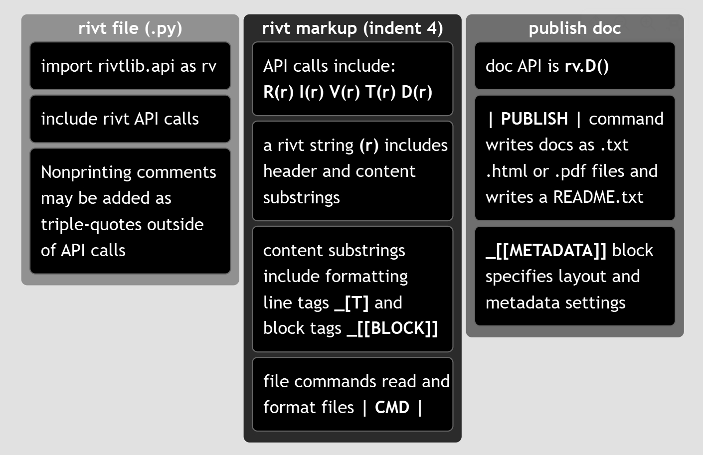

A.1 | Tutorial#
[1] rivt file Anatomy#
This chapter provides a step by step tutorial for creating a rivt file and compiling it to a doc. The table below shows the basic rivt file structure and its relationship to Python. The resulting txt, PDF and HTML docs generated by the | PUBLISH | command are shown in the following chapters.
The first column shows the Python content of the rivt file. A rivt file includes the import statement, rivt API methods with markup and any triple quoted comments. These file components are Python syntax and are not indented.
The second column describes the contents of an API method, including rivt markup and plain text. API methods always write formatted text to STDOUT and may be run as interactive cells in an IDE e.g. VSCode.
The third column describes the Doc API method which contains settings that trigger publication of a doc in one of the three formats.
{kind=link}

The doc example file used in this tutorial, along with other report and rivtbook example files, are provided at google drive.
-
- Example 1
-
An example file that illustrates common API methods and rivt markup. The %% marks provide cell level navigation in a side pane of VSCode and may be auto inserted with keystrokes when the rivt profile is used.
-
- Example 2
-
An example that illustrates the use of Python functions.
-
- Example 3
-
An example rivt report. Reports are assembled through a report script - make-report.py stored in the rivt-report folder.
-
- Example 4
-
An example rivtbook. rivtbooks are collections of rivt files with a common subject matter organized for efficient selection and inclusion in docs and reports.
The four examples provide:
-
the rivt file with source files
-
published docs in each format
-
the README.txt file
[2] tutorial - Example 1#
rivt files can be created from scratch as a .py file or by making a copy and editing an existing rivt file. The rivt file contents for this example are shown in the dropdowns. The complete file is shown in the next chapter.
Unit definitions are here. New units may be defined by the add-units.py file in the rvsrc/scripts folder.
After initialization, any API can be used any number of times and in any order, except for rv.D(r) which stops file processing and triggers a doc output with the | PUBLISH | command.
[ 1 ] Add import statement
Following the import statement, comment settings may be added if defaults need to be changed. In addition, triple quoted comments can be added between API methods. They are not indented and are not part of the doc.
""" This is a rivt doc example. It is used in the tutorial at
https://www.rivt.info. .
This example illustrates:
rivtlib markup
- Multiple API sections (chapters)
- Footnotes
- Inline comments
- Url links
- Variable definitions
- Table blocks and commands
- Value table command
- Metadata and layout block
- Python function command
- Image command
- Publish command
VSCode / Python features
- cell labels
- docstrings
- extensions
"""
import rivtlib.rvapi as rv
# cooment settings are only needed if defaults are changed.
# rv set_width = 80 ; character width of text output (80)
# rv no_tag = true ; if false, the API type is added to section number (true)
# rv private = true ; if false, default section heading changed to public (private)
[ 2 ] Add API method - rv.I
See header and content reference for rivt string details. This section includes footnote [#] and link [U] tags.
# %% rv.I("""Summary and Loads
rv.I("""Summary and Loads
This rivt file example calculates the maximum stress and deflection in a
simply supported, uniformly loaded beam using E-B theory _[#]. It also
serves as an annotated example of a single rivt doc with multiple sections
that is not part of a report.
The example illustrates the use of some of the most common API methods,
commands and tags. Further details are provided in the
_[U] rivt user manual, https://www.rivt.info |.
The file may be formatted as a text, PDF or HTML doc by changing the type
parameter in the PUBLISH command at the end of each rivt file (Doc-API
*rv.D*). Published files are found in the _published folder.
""")
[ 3 ] Add API method - rv.I
This section includes inline comments ( ## ) and [[TABLE]] blocks. The # %% marks provide interactive execution and file navigation in a side pane of VSCode and may be auto inserted with keystrokes when the rivt profile is used.
# %% rv.I("""Load Combinations
rv.I("""Load Combinations
## Comments with double hashes will not appear in the doc
Dead and live loads effects are taken from ASCE 7-05 _[#]
_[[TABLE]] Load Effects
============= ================================================
Equation No. Load Combination
============= ================================================
16-1 1.4(D+F)
16-2 1.2(D+F+T) + 1.6(L+H) + 0.5(Lr or S or R)
16-3 1.2(D+F+T) + 1.6(Lr or S or R) + (f1L or 0.8W)
============= ================================================
_[[END]]
""")
[ 4 ] Add API method - rv.V
This Value section includes the | VALTABLE | and | IMAGE | commands, the _[C] and _[T] tags, and the assignment operators ==: and <=: .
# %% rv.V("""Loads and Geometry
rv.V("""Loads and Geometry
Value definitions are formatted as a table. Variable values are
defined with the define operator. The line tag [T] labels and
numbers the table. Units are listed here. New units may be defined
in the add-units.py file in the rvsrc folder.
Define Unit Loads _[T]
D_1 ==: 3.8 * p_sf | p_sf, kPA, 2 | joists DL
D_2 ==: 2.1 * p_sf | p_sf, kPA, 2 | plywood DL
D_3 ==: 10.0 * p_sf | p_sf, kPA, 2 | partitions DL
D_4 ==: 2 * 1.5 * k_ft | k_ft, kN_m, 2 | fixed machinery DL
L_1 ==: 40 * p_sf | p_sf, kPA, 2 | ASCE7-O5 LL
b_1 ==: 10 * inch | inch, mm, 2 | beam width
h_1 ==: 18 * inch | inch, mm, 2 | beam depth
E_1 ==: 29000 * k_si | k_si, MPA, 2 | modulus of elasticity
Fb_1 ==: 20000 * p_si | p_si, MPA, 2 | allowable stress
The VALTABLE command reads variable values from a file in the rvsrc
folder. The description is the table title, followed by the max
column width.
| VALTABLE | rvsrc/beam1.csv | Beam Geometry, 40
## The IMAGE command inserts an image file with caption, % scale, num;non option
| IMAGE | rvsrc/img/beam1.png | Beam Diagram, 60, num, not
Uniform Distributed Loads _[C]
dl_1 <=: 1.2 * (spc_1 * (D_1 + D_2 + D_3) + D_4) | k_ft, kN_m, 2 | Dead load [ASCE7-05 2.3.2]
ll_1 <=: 1.6 * spc_1 * L_1 | k_ft, kN_m, 2 | Live load [ASCE7-05 2.3.2]
omega_1 <=: dl_1 + ll_1 | k_ft, kN_m, 2 | Total load [ASCE7-05 2.3.2]
""")
[ 5 ] Add API method - rv.V
This Value section includes the | PYTHON | and | IMAGE2 | commands, the _[B] and _[M] tags, and the assignment operators :=: and <=: .
# %% rv.V("""Beam Stress
rv.V("""Beam Response
The following lines import the beam geometry from an external file,
calculate section properties from imported functions and calculate
the maximum moment, bending stress and mid-span deflection.
| PYTHON | rvsrc/scripts/sectprop.py | Beam functions
section_1 :=: rectsect(b_1, h_1) | in3, cm3, 2 | rectangle - S (sectprop.py)
inertia_1 :=: rectinertia(b_1, h_1) | in4, cm4, 1 | rectangle - I (sectprop.py)
| IMAGE2 | rvsrc/img/ss-beam2.png, rvsrc/img/ss-beam1.png | Moment diagram, Deflection diagram,46,54,num,num
Maximum bending stress formula _[B]
## The line tag [M] formats the equation using utf-8 text.
σ1 = M1 / S1 _[M]
m_1 <=: omega_1 * spn_1**2 / 8 | ftkips, mkN, 2 | Mid-span UDL moment
fb_1 <=: m_1 / section_1 | p_si, MPA, 1 | Bending stress
fb_1 < Fb_1 | k_si, 2, OK, >>> NOT OK | Stress ratio
delta_1 :=: midspan_delta(spn_1, omega_1, E_1, inertia_1) | inch, mm, 2 | mid-span deflection (sectprop.py)
""")
[ 6 ] Add API method - rv.R
The Run API does not use commands or tags in the content substring. The header substring includes a type parameter identifying the content text or script. In this example the API is used for endnotes. See rv.R Markup.
# %% rv.R("""doc notes | endnotes
rv.R("""doc notes | endnotes
"Euler-Bernoulli beam theory", Wikipedia, Wikimedia Foundation. [Online].
https://en.wikipedia.org/wiki/Euler_Bernoulli_beam_theory.
[Accessed: Jun. 15, 2026].
ASCE/SEI 7-05, Minimum Design Loads for Buildings and Other Structures,
American Society of Civil Engineers, 2005.
""")
[ 7 ] Final API method - rv.D
The Doc API publishes formatted docs and then exits the rivt file. The primary command is the | PUBLISH | command which specifies the doc title and type. The primary tag is the _[[METADATA]] block which includes the doc [metadata] and [layout] settings. The | PDFATTACH | command may be used to attach a PDF file to the doc. See rv.D Markup.
# %% rv.D("""Publish Doc
rv.D("""Publish Doc
A rivt file may be published as a text, PDF or HTML doc by specifying
the PUBLISH type parameter as txt, pdf or html.
Published files are found in sub-folders of the _published folder. A
text version of the doc or report is is always written to
STDOUT (terminal) and the rivt and _rivt-public folders as a
README.txt file. READMEs are formatted and displayed on the first
page of a GitHub repo.
| PUBLISH | Example 1 - rivt Doc | pdf
_[[METADATA]]
[doc]
authors = R Holland
version = 1.0.0a12
repo = https://github.com/rivt-info/rivt-single-doc
license = https://opensource.org/license/mit/
copyright = -
fork1_authors = -
fork1_version = -
fork1_repo = -
fork1_license = https://opensource.org/license/mit/
[layout]
subtitle = UDL Beam
copyright = --
client = Attn: User Example
coverpage = true
coverlogo_size = 30
coverlogo = logo1.png
runninglogo = logo2.png
runninglabel = rivt
project_ref = proj. 0001
pdf_pagesize = letter
pdf_margins = 1in, 1in, 1in, 1in
pdf_link_underline = false
; colors - red, blue, green, yellow, black, gray, brown
; lightblue, magenta, lime, maroon, gray, olive, cyan
pdf_link_color = brown
; toc levels: 1 - includes subdivisions, 2 - also includes sections
toc_level = 2
[process]
doc_verbose = true; if false minmize output during doc processing
auto_cfg = true ; if false, config files are not updated from rivt file
_[[END]]
""")